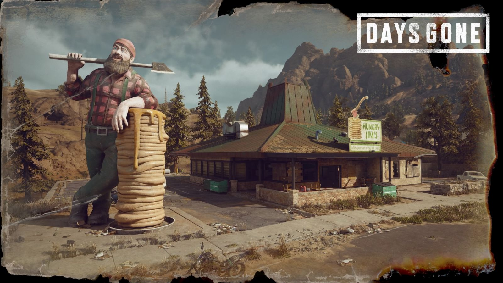

Hungry Jim's Buttermilk Pancakes from Days Gone

At the beginning, I thought that in Days Gone we won’t find many culinary elements.
However, the food motif is implemented not only in the mechanics of hunting, collecting
plants and taking them to nearby camps (more on this in the next post, where we will cook
some venison;)), but also appears in the environment creation layer. A great example here
is the Hungry Jim’s diner, which we see at the very beginning of the mission “It;s not
safe here” at Marion Forks. The camera draws our attention to the unusual advertising of
the restaurant – it is a few-foot tall figure of a lumberjack resting his hand on a pile
of pancakes topped with sauce. For this we made delicious homemade salted caramel, which
has a similar color to the sauce shown on the giant advertisement.
Ingredients
- 300g buttermilk
- 1 egg
- 60g melted butter
- 160g wheat flour
- 30g sugar
- 1.5 teaspoons baking powder
- Pinch of salt
- 100ml 30% cream
- 100g sugar
- 1/2 teaspoon salt
Steps
- Melt butter in a saucepan and cool it slightly.
- Pour dry ingredients into a larger bowl, mix and make a hole in the middle (like a
bomb hole;))
- Pour buttermilk into a smaller bowl (it should be at room temperature) and melted
butter. Separate the yolks from the whites – translate the yolks into buttermilk, and
the whites into a separate bowl. Whisk the whites lightly with a fork.
- Pour the wet ingredients into to the bowl with dry ingredients, directly to the hole.
Mix with a spoon only to combine the ingredients. At the end, add whisked whites and
mix again with a few delicate movements. Do not stir too long – you can leave clumps
in the batter.
- Cover the bowl with dough and let it “rest” for about 15 minutes.
- Pour the sugar into a pan with a light and thick bottom. Heat on medium heat. When it
dissolves, reduce the fire to a minimum and control the color of the caramel. At this
stage, be careful not to burn sugar. When the color is intensely amber, add heated
cream. Mix it with a wooden spatula and heat at medium power for about 15 minutes.
Dense clumps of sugar should dissolve and the final consistency should resemble
liquid honey (after cooling, the sauce thickens – if it’s too thick, you can add more
cream). At the end add some salt.
- Firmly heat the pan, add a bit of butter. Using a ladle, apply a portion of a dough
into the center, spread lightly on the sides so that the pancakes are round. Fry on
strong fire for 3-4 minutes, until the cake will grow slightly and bubbles will start
to appear on its surface. Then turn pancakes over with the spatula and fry for a
further 3 minutes. Pancakes must be nicely browned on two sides. Put them on a plate,
stacking one on top of the other.
- Pour the hot pancakes with liquid, salted caramel. Better eat them fast before the
freakers will come and devour them!